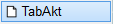
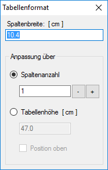
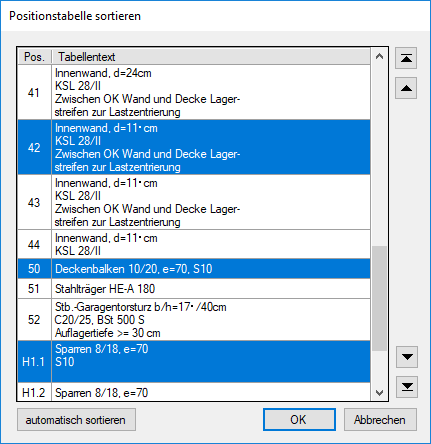
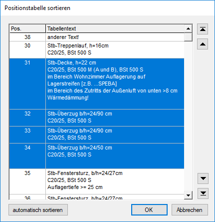

")
")
Tabellentexte der statischen Positionen in einer Positionstabelle zusammenfassen und als Legende in der Zeichnung platzieren bzw. die vorhandene Positionstabelle aktualisieren.
·Statische Positionen mit identischen Einträgen bei Position, ID-Bezeichnung, Tabellentext und der Umrandung werden nur einmal in der Tabelle erfasst.
·Die Darstellung der Positionstabelle wird als Vorschau an den Mauszeiger gehängt. Sie können die Positionstabelle vor dem Absetzen formatieren und/oder sortieren.
·Sind keine Tabellentexte vorhanden (keinem statischen Positionskreis wurde ein Tabellentext zugeordnet), wechselt ISBCAD in die zeichn- oder TabTxt-Funktion (situationsbedingt). Sie können dann sofort einen Positionskreis anlegen bzw. einen Tabellentext zuordnen.
·Die Positionstabelle wird mit den Texteigenschaften der jeweiligen Positionsnummer erstellt. Änderungen können mit der Funktion [Konst1 | FenÄnd | FnText → Auswahl] vorgenommen werden.
|
Achtung: Eine bereits abgelegte Positionstabelle wird nicht automatisch aktualisiert. |
|
Um fehlerhafte Einträge durch geänderte Tabellentexte oder Positionsnummern zu vermeiden: |

Um das Tabellenformat anzupassen
Im Dialog Tabellenformat können Sie das Format der Positionstabelle anpassen, indem Sie die Spaltenbreite, Spaltenanzahl sowie Tabellenhöhe angeben. Änderungen werden nach Bestätigung mit der Eingabetaste in der Voransicht (am Mauszeiger) angezeigt.
 |
Spaltenbreite: [cm] Angabe der Spaltenbreite in cm. Anpassung über
Sollten Sie feststellen, dass noch weitere Änderungen an den Parametern (Spaltenbreite und/oder Tabellenhöhe) vorgenommen werden müssen, können Sie durch das Variieren der Werte die Tabelle auf den zur Verfügung stehenden Platz anpassen. |
Um die Tabelle zu sortieren
§Klicken Sie auf (unterhalb der Abfrage [Rechteck verschieben]).
Der Dialog Positionstabelle sortieren wird geöffnet.
a)Um die Positionstabelle automatisch nach Positionsnummern zu sortieren:
Klicken Sie auf automatisch sortieren. Textfelder werden in alphabetischer Reihenfolge (A-Z), numerische Felder in aufsteigender Reihenfolge (0-9) sortiert.
b)Um die Tabelleneinträge individuell anzuordnen:
Markieren Sie eine oder mehrere Positionsnummern mit der Maus und verwenden Sie die Pfeilsymbole zum Verschieben.
Einzeln markieren  |
Wählen Sie einen beliebigen Eintrag in der Tabelle. Halten Sie anschließend die Strg-Taste gedrückt und klicken Sie nacheinander weitere Einträge an, die Sie der Auswahl hinzufügen möchten. Um einen Eintrag wieder abzuwählen, klicken Sie diesen erneut mit gedrückter Strg-Taste an. |
Im Block markieren  |
Klicken Sie die erste Tabellenzeile an, die markiert werden soll und anschließend, bei gedrückter Umschalt-Taste, die letzte Tabellenzeile. Alle Tabelleneinträge, die sich zwischen den angeklickten Einträgen befinden, werden markiert. Oder: Halten Sie die Umschalt-Taste gedrückt, während Sie eine der folgenden Bewegungstasten verwenden, um Ihre Auswahl zu vergrößern oder zu verkleinern: ↓, ↑, Bild ab oder Bild auf. Oder: Drücken Sie die linke Maustaste auf dem ersten Eintrag und bewegen Sie die Maus über die Einträge bis zum letzten Eintrag. |
Markierte Einträge werden ganz nach oben bzw. ganz nach unten gestellt. |
|
Markierte Einträge werden um eine Zeile nach oben bzw. unten verschoben. |
§Klicken Sie auf OK.
Die Sortierung wird übernommen. Sie können die Positionstabelle jetzt in der Zeichnung absetzen. [Rechteck verschieben].
§Platzieren Sie die Positionstabelle per Mausklick an der gewünschten Stelle.
Sie können die Platzierung und das Tabellenformat jederzeit ändern. Die Positionstabelle und die Tabellentexte werden mit der Positionsnummer, wie in der Vorschau angezeigt, auf die Zeichenfläche gezeichnet.
Siehe auch:
·Positionsübersicht anzeigen und ausgeben
Zugehörige Referenzen: